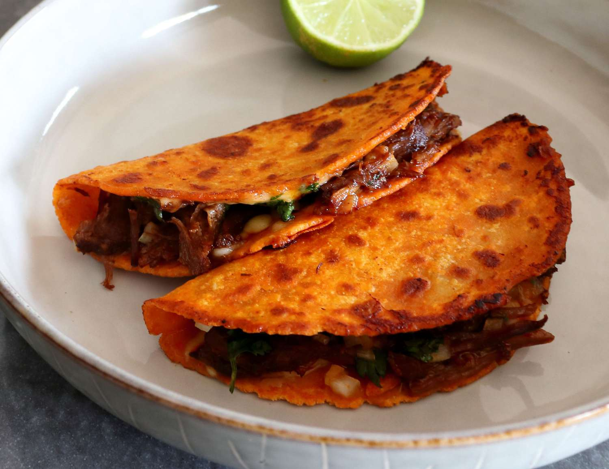

Taco

Description
Birria tacos are so delicious and this recipe is my take on the world's most trendy taco. Seriously, when you make these, you'll understand what all the fuss is about. Start with a batch of my beef birria and use some of the sauce in these shredded beef tacos with cheese. A super savory, aromatic consommé is served on the side for dipping.
Ingredients
- 2 cups reserved sauce from beef birria recipe
- 1 cup chicken broth
- ¼ cup diced carrots
- ¼ cup diced celery
- ½ cup diced cabbage
Steps
- 3 tablespoons reserved beef fat from beef birria recipe, or more as needed
- 8 (5 inch) corn tortillas
- 2 cups freshly grated Monterey Jack cheese
- 2 cups shredded Beef Birria
- 4 tablespoons chopped white onion, or to taste, divided
- 4 tablespoons chopped fresh cilantro, or to taste, divided
- 1 medium lime, cut into 4 wedges